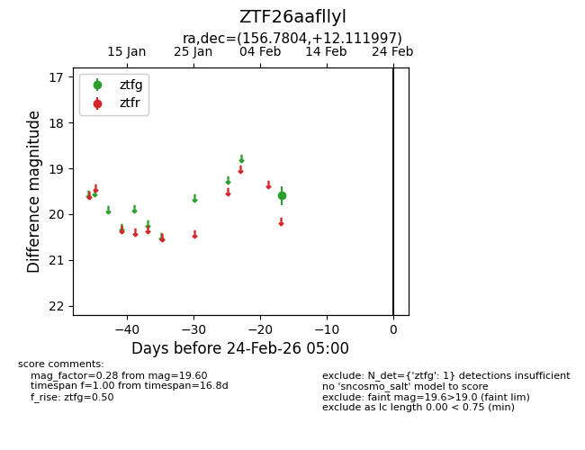
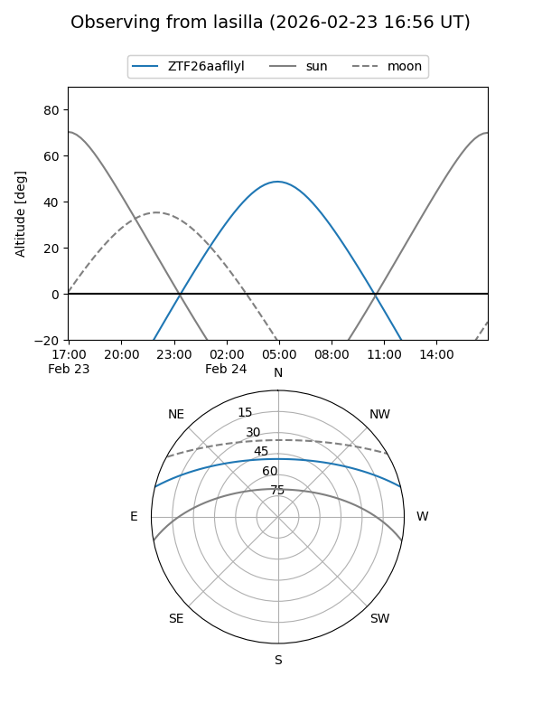
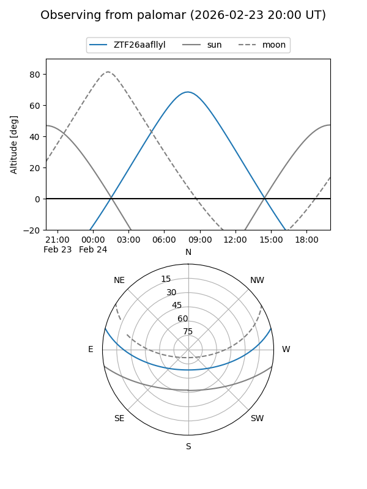

ZTF26aafllyl
Target ZTF26aafllyl at 2026-02-24 09:08
Aliases and brokers:
FINK: link
Lasair: link
ALeRCE: link
alt names
ZTF26aafllyl (ztf,fink_ztf)
Coordinates:
equatorial (ra, dec) = 156.7804,+12.11200
equatorial (HMS+DMS) = 10:27:07.30,+12:06:43.19
galactic (l, b) = (229.7085,+53.03064)
Flags:
Photometry:
last ztfg=19.60
1 ztfg detections
Lightcurve

Visibility


Additional plots